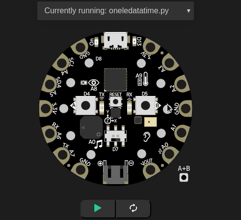
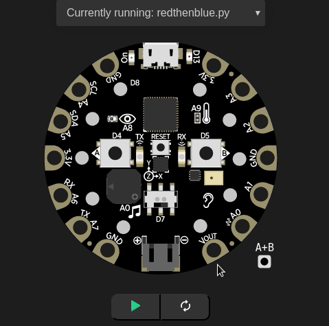

Looping over hardware¶
In this chapter we learn about looping using hardware (simulation).
One NeoPixel at a time¶

The cpx.pixels can be accessed by index numbers, from 0 to 9. This way, we can turn on one NeoPixel at a time.
1 2 3 4 5 6 7 8 9 10 11 12 13 14 15 16 | # import CPX library
from adafruit_circuitplayground.express import cpx
import time
BLUE = (0, 0, 255)
i = 0
while True:
# start your code here
if i == 10:
time.sleep(10)
continue
cpx.pixels[i] = BLUE
i += 1
time.sleep(0.5)
|
On line number 7, we declared a variable which selects the correct NeoPixel, and then on line number 14 we are turning on that NeoPixel to Blue color, and then increasing the variable to go to the next NeoPixel. The conditional if statement on line 11 makes sure that when we turn on all the lights, we sleep for 10 seconds and continue to do so.
First Red and then Blue¶

Here using two for loops, we are first turning on each NeoPixel in Red and then in Blue.
1 2 3 4 5 6 7 8 9 10 11 12 13 14 15 16 17 | # import CPX library
from adafruit_circuitplayground.express import cpx
import time
RED = (255, 0, 0)
BLUE = (0, 0, 255)
while True:
for i in range(0, 10):
cpx.pixels[i] = RED
time.sleep(0.5)
time.sleep(0.5)
for i in range(0, 10):
cpx.pixels[i] = BLUE
time.sleep(0.5)
|